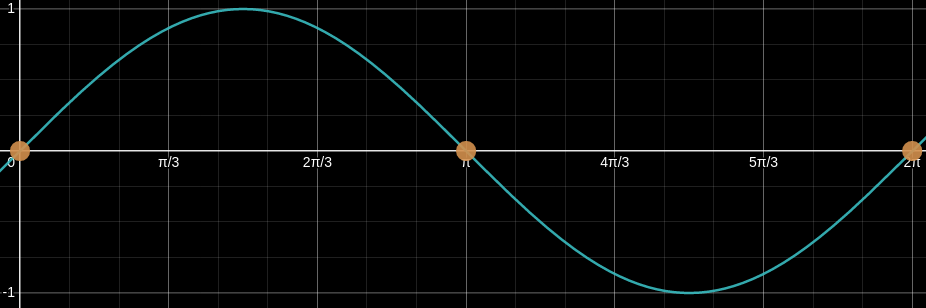

Math has a lot of rules and hidden intricacies. From elementary or middle schools, students are taught not to ever divide by 0. While most students take this to heart, a common mistake students make is dividing by some function or variable that can be 0 in its domain. This error is not unique to students learning Math but also made by beginners in programming.
For instance, a Highschool student may be asked to create a simple calculator where one of the operations is a division and forget to check if the operation is valid before performing the operation.
Code:
#include <stdio.h>
#include <stdlib.h>
int main () {
int num1, num2;
printf("First number: ");
scanf("%d", &num1);
printf("Second number: ");
scanf("%d", &num2);
printf("%d / %d = %d", num1, num2, num1/num2);
}
Result:
$ ./a.out
First number: 1
Second number: 0
Floating point exception (core dumped)
I recently got the opportunity to be a teaching assistant for a calculus course for engineers. It came to my attention when marking their assignments a common mistake whereby students were dividing by 0. Unlike the common mistakes non-engineers and Highschooler makes whereby they divide by 0 without restricting the domain (i.e. state $x \ne 0$), this was a bit more interesting. While I cannot provide the exact question due to academic intellectual property reasons, here is a similar problem:
Solve for x: $\sin x + \sqrt{2}\cos x \sin x = 0$ for $0 \le x \le 2\pi$
To approach the problem, some students may do the following:
\[\begin{align*} \sin x(1+ \sqrt{2}\cos x) &= 0 \\ 1 + \sqrt{2}\cos x &= 0 \end{align*}\]However, this is a division by 0 error. As to why this is a division by 0, one needs to recall the graph of $\sin x$:

$\sin x$ can be 0 when $x = 0, \pi, 2\pi \in [0, 2\pi]$ where the domain is specifically mentioned in the question. Dividing by $\sin x$ on both sides is illegal and will omit the possible values x could be.
This was interesting because it’s a division by zero through a trigonometric function and not some polynomials that I am used to seeing students including myself make. It never occurred to me how sneaky trigonometric functions and functions in general can be.
Note: It is unlikely I will be writing any technical blogs till February since I have not gotten much time to fiddle with computer science and programming for a while.